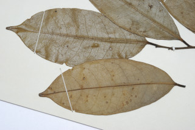
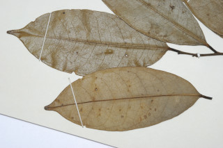

Small trees, up to 8 m tall.
ಚಿಕ್ಕ ಮರಗಳು 8ಮೀ ಎತ್ತರದವರೆವಿಗೆ ಬೆಳೆಯುತ್ತವೆ.
8 മീറ്റര് വരെ ഉയരമുള്ള ചെറുമരങ്ങള്.
சிறிய மரம், 8 மீ. உயரம் வரை வளரக்கூடியது.
Branchlets terete, subglabrous.
ಕಿರುಕೊಂಬೆಗಳು ಗುಂಡಾಕಾರದಲ್ಲಿದ್ದು ಉಪ ರೋಮರಹಿತವಾಗಿರುತ್ತದೆ.
ഉരു, ഉപഅരോമിലമായ ഉപശാഖകള്.
சிறிய நுனிக்கிளைகள் குறுக்குவெட்டுத் தோற்றத்தில் வளையமானது, மிக நுண்ணிய குறைந்தளவு உரோமங்களுடையது (சப்கேளப்ரஸ்).
Leaves simple, alternate, distichous; petiole 0.8-1 cm long, terete, petiole articulate at base, glabrous; lamina 10-15 x 4-5.5 cm long, oblong to narrow elliptic-oblong, apex bluntly acuminate, base acute to subattenuate, chartaceous, glabrous; midrib stout, prominent beneath; secondary_nerves 10-12 pairs; tertiary_nerves very slender, coarsely reticulate.
ಎಲೆಗಳು ಸರಳ, ಪರ್ಯಾಯ ಜೋಡನಾ ವ್ಯವಸ್ಥೆಯಲ್ಲಿ ಕಾಂಡದ ಎರಡೂ ಕಡೆ ಎದುರು ಬದರಿನ ಲಂಬಸಾಲಿನಲ್ಲಿರುತ್ತವೆ. ತೊಟ್ಟುಗಳು 0.8 ರಿಂದ 1 ಸೆಂ.ಮೀ. ಉದ್ದ, ಆಕಾರದಲ್ಲಿ ದುಂಡಾಗಿದ್ದು, ರೋಮರಹಿತವಾಗಿರುತ್ತವೆ. ಎಲೆ ಪತ್ರಗಳು 10 - 15 × 4 - 5.5 ಸೆಂ.ಮೀ. ಗಾತ್ರ ಹೊಂದಿದ್ದು, ಧೀರ್ಘ ಚತುರಾಸ್ರಾಕಾರದಿಂದ ಅಂಡವೃತ್ತ ಆಕಾರ ಹೊಂದಿದ್ದು, ಮೊಂಡಾಗಿ ಕ್ರಮೇಣ ಚೂಪಾಗುವ ತುದಿ ಹಾಗೂ ಚೂಪಾದುದರಿಂದ ಉಪ ಒಳಬಾಗಿದ ತಳವುಳ್ಳ ಬುಡ, ಕಾಗದರೂಪದ ಮೇಲ್ಮೈ ಹೊಂದಿದ್ದು ರೋಮರಹಿತವಾಗಿರುತ್ತದೆ. ಮಧ್ಯನಾಳ ದೃಢವಾಗಿದ್ದು ಪತ್ರದ ತಳಭಾಗದಲ್ಲಿ ಪ್ರಾಮುಖ್ಯವಾಗಿ ಕಂಡುಬರುತ್ತವೆ. ಎರಡನೇ ದರ್ಜೆಯ ನಾಳಗಳು 10 ರಿಂದ 12 ಜೋಡಿಗಳಿರುತ್ತವೆ. ತೃತೀಯ ದರ್ಜೆಯ ನಾಳಗಳು ಅತ್ಯಂತ ತೆಳುವಾಗಿದ್ದು, ಸ್ಥೂಲವಾದ ಜಾಲಬಂಧನಾಳ ರೂಪದಲ್ಲಿರುತ್ತವೆ.
ലഘുവായ ഇലകള്, ഏകാന്തര ക്രമത്തില്, തണ്ടിന്റെ ഇരുഭാഗത്തു മാത്രമായി അടുക്കിയിരിക്കുന്നു; 0.8 മുതല് 1 സെ.മി വരെ നീളമുള്ള, ഉരുണ്ട ഇലഞെട്ട്, ഇതിന്റെ കീഴറ്റം കര്ണ്ണിതമാണ്, അരോമിലവും; പത്രഫലകത്തിന് 10 മുതല് 15 സെ.മീ നീളവും 4 മുതല് 5.5 സെ.മീ വീതിയും, ദീര്ഘാതാകാരം മുതല് വീതികുറഞ്ഞ ദീര്ഘവൃത്താകാര-ദീര്ഘായതാകാരമോ ആണിതിന്, മുനപ്പില്ലാത്ത വാലോടുകൂടിയ ദീര്ഘാഗ്രം, പത്രാധാരം നിശിതമോ സാവധാനം നേര്ത്തവസാനിക്കുന്നതോ ആണ്, കടലാസ് പോലുള്ള പ്രകൃതം, അരോമിലമായ പത്രഫലകം; ദൃഢമായ മുഖ്യസിര കീഴ്ഭാഗത്ത് ഏറെ വ്യക്തമാണ; 10 മുതല് 12 ജോഡി ദ്വിതീയ ഞരമ്പുകള്; നന്നേ നേര്ത്ത ത്രിതീയ ഞരമ്പുകള് ക്രമരഹിതമായ ജാലിക തീര്ക്കുന്നു.
இலைகள் தனித்தவை, மாற்றுஅடுக்கமானவை, இருநெடுக்கு வரிசையிலையடுக்கம் (டைஸ்டிக்கஸ்); இலைக்காம்பு 0.8-1 செ.மீ. நீளமானது, வளையமானது, இலைக்காம்பு தளப்பகுதியில் செவி வடிவானது, உரோமங்களற்றது; இலை அலகு 10-15 X 4-5.5 செ.மீ. நீளமானது, நீள்சதுர வடிவம் முதல் குறுகிய நீள்வட்டம்-நீள்சதுரம், அலகின் நுனி அதிக்கூரியதுடன் மழுங்கியது, அலகின் தளம் கூரியது முதல் அட்டனுவேட், சார்ட்டேசியஸ், கீழ்பரப்பு உரோமங்களற்றது; மையநரம்பு பருமனானது, கீழ்பரப்பில் மேலெழும்பியது; இரண்டாம் நிலை நரம்புகள் 10-12 ஜோடிகள்; மூன்றாம் நிலை நரம்புகள் மிகவும் மெலிதானது, அகன்ற வலைப்பின்னல்.
Flowers solitary, axillary; pedicels 1.5-2 cm, glabrous.
ಹೂಗಳು ಅಕ್ಷಾಕಂಕುಳಿನಲ್ಲಿ ಒಂಟಿಯಾಗಿರುತ್ತವೆ. ಹೂ ತೊಟ್ಟು 1.5 ರಿಂದ 2 ಸೆಂ.ಮೀ. ಉದ್ದವಿದ್ದು ರೋಮರಹಿತವಾಗಿರುತ್ತವೆ.
അരോമിലമായ, 1.5 മുതല് 2 സെ.മീ നീളമുള്ള പുഷ്പവൃന്തം.
மலர்கள் தனியானது, இலைக்கோணங்களில் அமைந்தவை; மலர்காம்பு 1.5-2 செ.மீ., உரோமங்களற்றது.
Clustered 1-seeded berries, sessile or shortly stalked.
ಒಂದು ಬೀಜ ಹೊಂದಿದ ಬೆರ್ರಿಗಳು ತೊಟ್ಟು ರಹಿತವಾಗಿ ಅಥವಾ ಚಿಕ್ಕದಾದ ತೊಟ್ಟು ಸಹಿತವಾಗಿದ್ದು ಗುಂಪಾಗಿರುತ್ತವೆ.
ഞെട്ടില്ലാത്തതോ ചെറു ഞെട്ടോടു കൂടിയതോ ആയ ഒറ്റവിത്തുള്ള സരസഫലങ്ങള് കൂട്ടമായുണ്ടാകുന്നു.
கொத்தான ஒரு விதையுள்ள முழுச்சதைகனி (பெர்ரி), காம்பற்றது அல்லது சிறிய காம்புடன் இருக்கும்.
 
